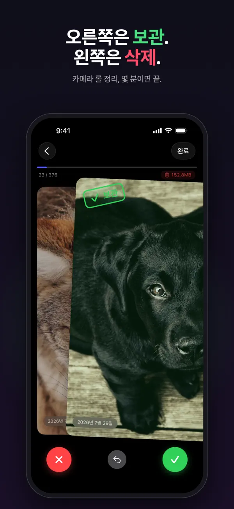
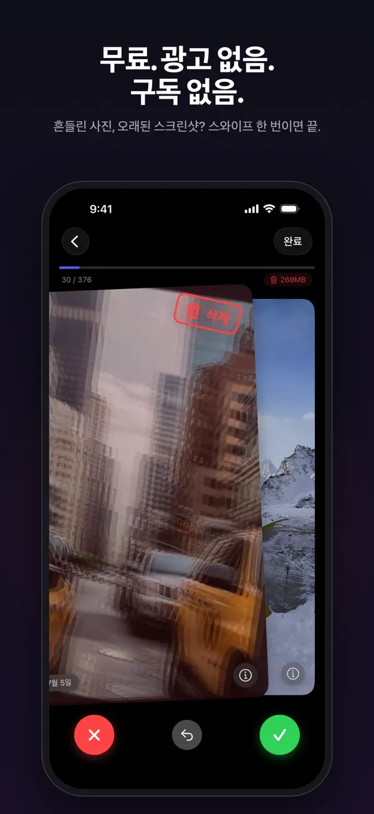
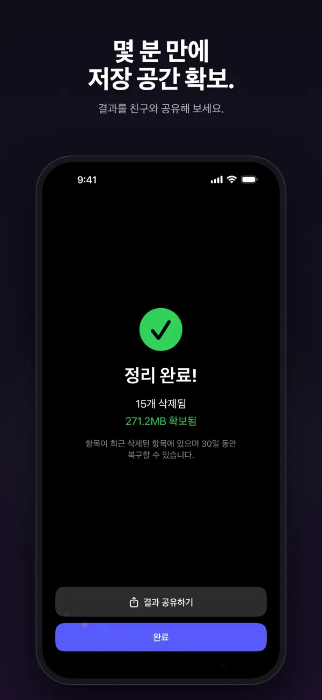

iPhone을 가볍게.
왼쪽으로 밀면 삭제, 오른쪽으로 밀면 보관.
Swiped는 iPhone과 iPad용 사진·동영상 정리 앱입니다. 수천 장의 사진을 몇 분 만에 정리하세요. 광고 없음, 구독 없음, 계정 불필요. 사진은 휴대폰 밖으로 나가지 않습니다.
- 무료
- 광고 없음
- 구독 없음
- 계정 불필요
- 사진은 iPhone 밖으로 나가지 않음




사용 방법
- 1앨범이나 전체 사진 보관함을 선택하세요.
- 2오른쪽은 보관, 왼쪽은 삭제. 언제든 되돌릴 수 있어요.
- 3선택한 사진을 확인하고 공간을 확보하세요.
꼭 필요한 것만
처음부터 개인정보 보호
모든 작업은 iPhone 안에서 이루어집니다. Swiped는 데이터를 수집하지 않습니다(App Store의 '데이터가 수집되지 않음').
안전한 삭제
선택한 사진을 확인하기 전에는 아무것도 삭제되지 않습니다. 삭제한 사진은 '최근 삭제된 항목'에 30일간 남아 있습니다.
용량 큰 파일 찾기
사진, 동영상, 스크린샷, 날짜, 크기로 필터링해 공간을 많이 차지하는 파일을 찾으세요.
공간 카운터
스와이프할 때마다 확보할 용량을 실시간으로 보여줍니다.
무제한 되돌리기
마음이 바뀌었나요? 원하는 만큼 이전 카드로 돌아가세요.
나중에 이어서
스와이프할 때마다 세션이 저장됩니다. 내일 다시 이어서 하세요.
자주 묻는 질문
Swiped는 정말 무료인가요?
네. 스와이프, 확인, 삭제 모두 무료이며 광고, 구독, 계정이 없습니다. 나중에 선택형 추가 기능이 일회성 구매로 나올 수 있지만 구독은 절대 아닙니다.
사진이 iPhone 밖으로 전송되나요?
아니요. Swiped는 iPhone 안에서만 사진을 봅니다. 서버가 없고 어떤 데이터도 수집하지 않습니다.
삭제한 사진은 어떻게 되나요?
확인하기 전에는 아무것도 삭제되지 않습니다. 이후 iOS가 '최근 삭제된 항목'으로 옮기며, 30일 동안 복구할 수 있습니다.
iCloud 사진과 함께 쓸 수 있나요?
네. iCloud에 저장된 사진도 표시되며, Swiped에서 삭제하면 사진 앱과 마찬가지로 모든 기기에서 삭제됩니다.
어떤 기기를 지원하나요?
iOS 16 이상의 iPhone과 iPad, 9개 언어를 지원합니다.
Android 버전이 있나요?
없습니다. Swiped는 iPhone과 iPad 전용입니다. Android나 App Store의 비슷한 이름의 앱과는 관련이 없습니다.
Swiped: 사진 정리 & 삭제
App Store에서 다운로드iPhone · iPad · 무료